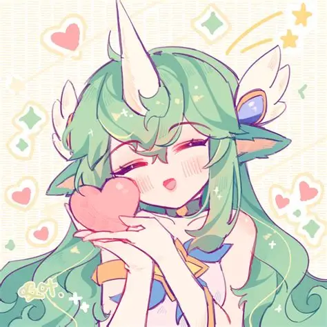

NOTE BOOK

DEDICADO A ROCIO

❤
★
★
❤

No sé muy bien cómo empezar estas palabras, pero quería decirte algo que pienso desde hace tiempo. Desde que llegaste a mi vida, de alguna manera todo se volvió un poco más interesante y más alegre. No ocupas mis pensamientos de una forma complicada, sino de una forma bonita, como cuando recuerdas a alguien que te hace sonreír sin darte cuenta.
Hay algo en tu forma de ser que hace que conversar contigo sea especial. Me gusta hablar contigo, molestarte un poco, hacerte reír y también verte enojar cuando te fastidio (aunque sea un poquito mas de lo normal a veces). Son esos momentos simples los que hacen que te aprecie mucho.
De verdad me gustaría poder conocerte más, compartir más momentos, seguir hablando, riendo y creando esas pequeñas historias que solo nacen cuando dos personas se llevan bien.
Porque más que nada, te considero una amiga muy especial, de esas personas que uno valora y quiere mantener cerca.
Solo quería que supieras que te aprecio mucho y que me gusta tenerte en mi vida, tal como eres.
Estas son pequeñas cosas que no cuento pero tengo en mente y te dicho, y no puedo evitar mirar atrás y sonreír por todo lo que hemos vivido. Cada día a tu lado ha sido una página que hemos escrito con amor, con risas, con retos superados y con una conexión que solo crece con el tiempo. Hay muchas cosas que quizá nunca te he dicho, pero que guardo en mi mente porque me dan alegría recordarlas. Gran parte de ellas son esas pequeñas cosas que me has contado que te gustan y que sin que lo sepas se quedan guardadas en mi cabeza. Como cuando mencionas que te gustaría que alguien te cocine algo con cariño, o cuando dices que te gustan los regalos sorpresa, de esos que llegan sin avisar. También recuerdo cuando dices que te estresa que te digan que tienes un regalo pero no te lo muestren todavía, y aun así a veces me dan ganas de molestarte un poco con eso. También están esos detalles tan tuyos, como cuando te gusta decir que algo está “caliente” solo para molestar y ver la reacción, y luego reírte. Son pequeñas cosas, pero son parte de cómo eres, y creo que son esas mismas cosas las que hacen que cada momento contigo sea especial y diferente.
Con cariño,
Joel.